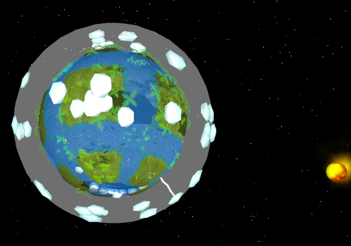

This manual is here to give you a brief overview of PlanetAGI and the most essential functions and tools it provides.
It can't detail every aspect of the software, as PlanetAGI is a very complex simulation; but you will learn how it works by trying different scenarios.
The possibilities are virtually endless. You are the god in PlanetAGI's world.
Click your topic of interest in the navigation bar above. Topics are getting more advanced from left to right.
| Astro Intelligence Planet |